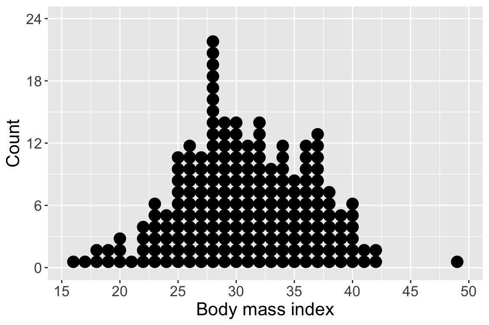
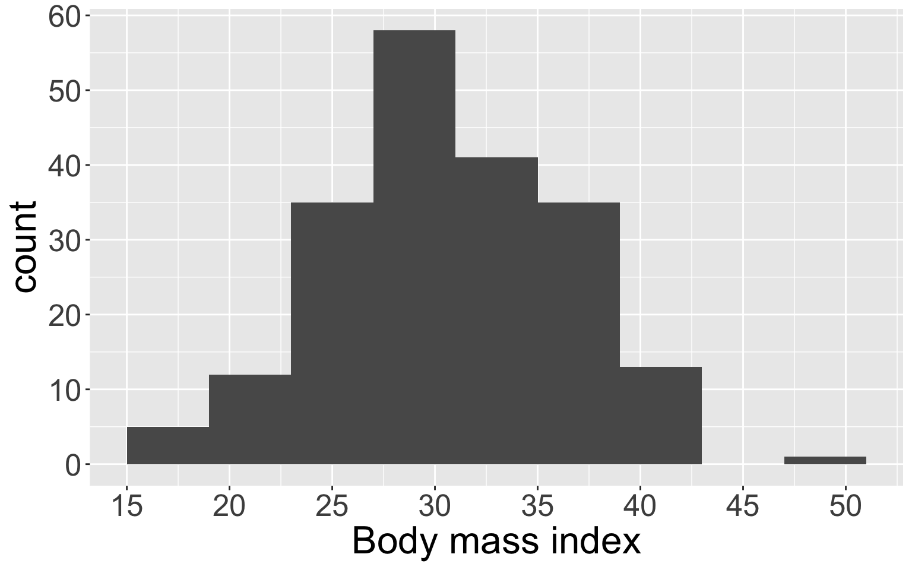
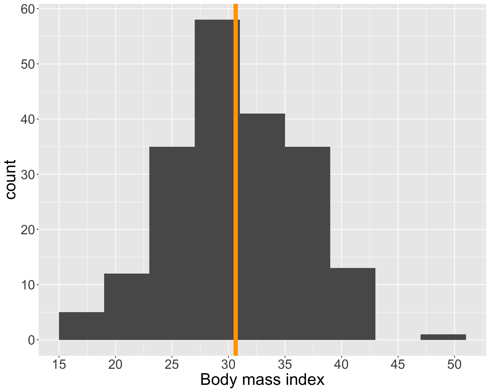

Numerical data
Visualization and summary statistics (part 1)
9/16/24
Housekeeping
- Feedback on coding practice
- Problem set 1 due tonight!
- Office hours today 2-4pm
- Activity!
Variables types
Variables can be broadly broken into two categories: numerical (quantitative) or categorical (qualitative)
Numerical variables take a wide range of numerical values, and it is sensible to add/subtract/do mathematical operations with those values. Two types:
Discrete if it can only take on finitely many numerical values within a given interval
Continuous if it can take on any infinitely many values within a given interval
Categorical variables are essentially everything else (more on this next week!)
Examples and non-examples?
Example
We will be looking at some medical insurance data throughout these slides.
Which of the following variables are numerical? Which are discrete vs. continuous?
Scatterplots
Scatterplots are bivariate (two-variable) visualizations that provide a case-by-case view of the data for two numerical variables
- Each point represents the observed pair of values of variables 1 and 2 for a case in the dataset
Scatterplots (cont.)
How do we determine which variable to put on each axis?
What do scatterplots reveal about the data, and how are they useful?
Dot plots
Dot plots are a basic visualization that show the distribution of a single variable (univariate)
In the following, we have a dot plot of
BMIrounded to the nearest integer.

Binning
- We will sacrifice a bit more of precision for convenience by binning:
- Segment the variable into equal-sized bins
- Visualize the value of each observation using its corresponding bin
- For example, the
bmivariable has observed values of \(15.96\) through \(49.6\). Consider the following bins of size 5: [15, 19), [19, 23), [23, 27), …, [49, 53)- Convention of left or right inclusive?
- We tabulate/count up the number of observations that fall into each bin.
Histograms
Histograms are visualizations that display the binned counts as bars for each bin.
- Histograms provide a view of the density of the data (the values the data take on as well as how often)
| bmi_bin | count |
|---|---|
| [15, 19) | 5 |
| [19, 23) | 12 |
| [23, 27) | 35 |
| [27, 31) | 58 |
| [31, 35) | 41 |
| [35, 39) | 35 |
| [39, 43) | 13 |
| [49, 52) | 1 |

Describing distributions
A convenient way to describe a variable’s behavior is through the shape of its distribution. Using histograms, we should identify:
- If the distribution is symmetric or skewed
- Distributions with long tails to the left are called left-skewed
- Distributions with long tails to the right are right-skewed
- If not skewed, then the distribution is symmetric
- Modes which are prominent peaks in the distribution
- Distribution may be unimodal (one peak), bimodal (two peaks), or multimodal (more than two peaks)
- Peaks need not be same height
Histograms (cont.)
How would you describe the shape of the distributions in the following two histograms?

Creating visualizations
Working in your groups, create a dot plot and a histogram of the estimated weights from the data we collected today!
Live code
If you’d like to follow along, please download the .Rmd template associated with today’s class! Otherwise, feel free to just watch and try coding on your own later on.
We will cover:
- Scatterplots and histograms in base
R
Summary statistics for numerical data
Visualizations are great for understanding the shape of a data distribution, but it can be extremely useful to obtain more specific, quantitative information about how the data behave.
In addition to describing the shape, we should also describe:
- Center
- Spread
Mean
By far the most common way to measure the center of the distribution of a numerical variable is using the mean (also called the average)
We use the term sample mean when calculating a mean using sampled data. The sample mean is typically denoted as \(\bar{x}\)
- \(x\) is a placeholder for the variable of interest (e.g.
BMI,charges) - The bar communicates that we are looking at the average
- \(x\) is a placeholder for the variable of interest (e.g.
The sample mean is the sum over all the observed values of the variable, divided by total number of observations \(n\):
\[\bar{x} = \frac{x_{1} + x_{2} + \ldots x_{n}}{n} = \frac{1}{n} \sum_{i=1}^{n} x_{i}\]
Mean (cont.)

The sample mean \(\bar{x}\) is an example of a sample statistic
The mean over the entire population is an example of a population parameter. The population mean is often denoted \(\mu\) (Greek letter mu)
The sample mean \(\bar{x}\) is often used as an estimate for \(\mu\) (more on this in STAT 311!)
Example
Let’s calculate the sample mean estimated weight from the data we collected today
Write out how you would calculate \(\bar{x}\)
- Then I will use
Rto calculate the sample mean!
Variability
However, at the heart of statistics is also the variability or spread of the distribution of the variable
We will work with variance and standard deviation, which are ways to describe how spread out data are from their mean

Deviation
We begin with deviation, which is the distance or difference between an observation from the (sample) mean
- How might we write this using statistical notation?
- Let’s write out the deviations of our estimated weights
Variance and standard deviation
The sample variance \(s^2\) squares the deviations and takes an average:
\[ s^2 = \frac{1}{n-1}\sum_{i=1}^{n} (x_{i} - \bar{x})^2 \]
- Let’s talk about this notation and intuition behind this formula. In particular, there are at least two things to note
Set-up the calculation of the sample variance for our data
- I will calculate this in
R
- I will calculate this in
The sample standard deviation \(s\) is the simply the square root of the sample variance (\(s = \sqrt{s^2}\))
Variance and standard deviation (cont.)
Like the mean, the population values for variance and standard deviation are denoted with Greek letters:
\(\sigma\) for population standard deviation (sigma)
\(\sigma^2\) for population variance
If the calculation of standard deviation is a more complicated quantity than the variance, why do we bother with standard deviation?
Live code
Functions to calculate sample mean, variance, and standard deviation in R:
mean()var()sd()